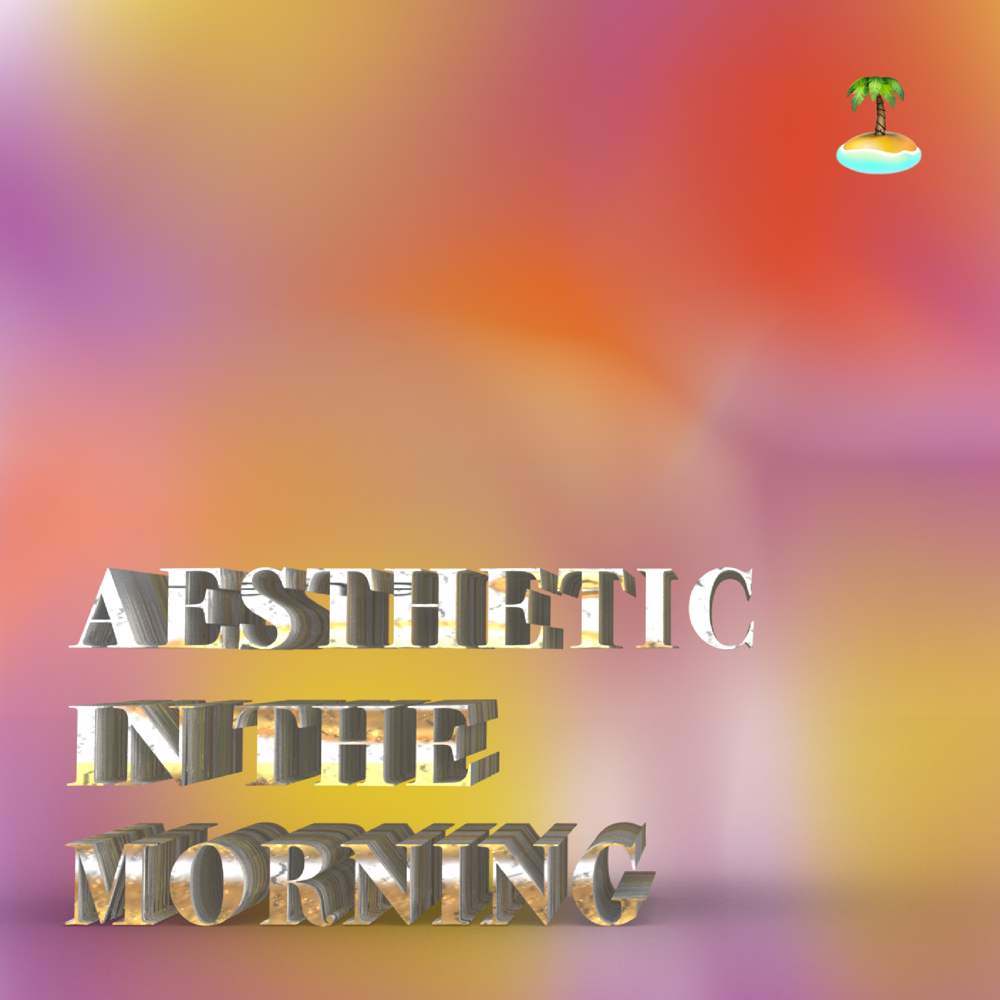

ＡＥＳＴＨＥＴＩＣ ＩＮ ＴＨＥ ＭＯＲＮＩＮＧ was broadcast on Radio Angrezi during Hochschultage 2018 at HfK Bremen. Although being a cliché-ridden breakfast programme, it mainly featured Vaporwave music.
Saturday
猫 シ Corp. — PALMS&PERSIANS
猫 シ Corp. — LIPS&LASHES
猫 シ Corp. — PINK&PEARLS
Billy Preston — Kick-It
회사AUTO — Cryochamber
コンシャスTHOUGHTS x ID Cℎίℯƒ x Aloe Island Posse — Space Cowboys
骨架的 — Everything Is Clean
░▒▓新しいデラックスライフ▓▒░ — ✰✭✰MORNING今日のプログラミングDAYTIME✰✭✰
Incarta’95 — Deadline
░▒▓新しいデラックスライフ▓▒░ — ➜A NEW TIME IS IN YOUR HANDS「それを実現させる！」
Chuck Person — Information
waterfront dining — harder they fall...
SAINT PEPSI — Dreams
コンシャスTHOUGHTS x Aloe Island Posse — Refreshing
01100001 S.T.A.R.D.U.S.T. Subsidiary — Audio Visual Centre
01100001 S.T.A.R.D.U.S.T. Subsidiary — Product Design and Fine Arts Marble Sculpting
01100001 S.T.A.R.D.U.S.T. Subsidiary — High Fashion Photo Studio
01100001 S.T.A.R.D.U.S.T. Subsidiary — Socializing With Friends (Campus Plaza)
猫 シ Corp. — 東京 HAZE (extended tape version)
天気予報 — Maintenance Broadcast
회사AUTO — ☄CRYSTAL☄COCOA☄
Anna Prohaska — Th'Expense of Spirit in a Waste of Shame (Sonnet 129)
Ｓｐｏｒｔ３０００ — DFS Kopernikus
galaxyboys — dream window
Macintosh Plus — リサフランク420 / 現代のコンピュー
death’s dynamic shroud.wmv — 負けSMILE
Bill Elm & Woody Jackson— (Theme From) Red Dead Redemption
Sonnig 991 — Rosa
猫 シ Corp. — s n e a k p r e v i e w
Station 17 — Fahrstuhl
death’s dynamic shroud.wmv — PLAZA WINDS
Electric Specter 電妖怪 — Icicle Electrode
Mahagonny Songspiel: V. God in Mahagonny: Lento
Jörg Pohl — Diamond in Your Mind
SAINT PEPSI — NEED U TONIGHT
(Corrupted) Technologies — Forget Your Memories
バーチャル Paragon ™ — ゴール
PZA — 1994
Kraantje Pappie — Pompen
Bonaparte — I Can’t Dance
Silver Richards — Nightlife
ソニコン — Spike (バタン)
Ｓｐｏｒｔ３０００ — 3 Level Test Signal
Midnight Runners — Musik Disko
Sunday
SAINT PEPSI — Drop
The Righteous Brothers — Unchained Melody
死夢VANITY — luxurious
Beverly Jo Scott, Slim Batteux — Bad Bad Whisky
猫 シ Corp. — Please insert your Username
사AUTO — Postcard From Martini Beach ✏wishyouwerehere, xofanfarronería✉ 회
death’s dynamic shroud.wmv — P A C I F I C ☯ V I S I O N S™ パート1：到着
The Beta Band — Squares
Faith Corp Ministries INT™ — H O L Y D A T A 幽霊
Faith Corp Ministries INT™ — The Bible™ CD - ROM Version
(Corrupted) Technologies — Attention/ Dreams Ending
Mort Garson — Incubus
Jürgen Holtz — All dessen müd (Sonnet 66)
ライフターン [Life Turns] — MAKE ME BOP
YAYA instrumentals — Cult
Bilderbuch — OM
death’s dynamic shroud.wmv — OPEN ME
猫 シ Corp. — Rock Wit’cha [with waterfront dining]
ソニコン — Commercial Break (Interlude)
SAINT PEPSI — ENJOY YOURSELF
Cinctulan — ICE CAVE HIDEOUT
Nail Salon — フィッシュニブラー
The Pastels — One Wild Moment (Stereolab Remix)
waterfront dining — the dreamer
Dopplereffekt — Infophysix
ファンタジー — 神秘的な女
Lindsheaven Virtual Plaza — Trip In Lindsheaven On A Micro Air Vehicle
バーチャル Paragon ™ — Ｏｎｌｉｎｅ Ｄａｔｉｎｇ
death’s dynamic shroud.wmv — 혼자 남은 지금 꼴이 (Reprise)
Malaria! — Kaltes klares Wasser
회사AUTO — Drive Thru 4AM (feat. Nmesh)
deadmau5 — Reward Is More Cheese
Balanescu Quartet — Robots
Gustav — mein bruder
t e l e p a t h テレパシー能力者 — 裏切り
Heino — So ein Tag, so wunderschön wie Heute